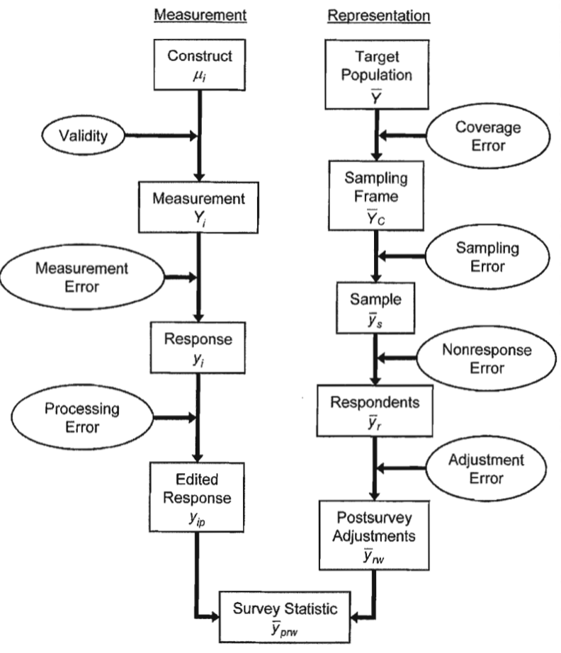

조사방법론. 1. 조사방법론 개요
chapter 1. 개요
1. 조사란?
조사는 특정 집단, 즉 표본으로부터 정보를 수집하여, 그 집단이 속한 더 큰 모집단의 특성을 수치적으로 설명하고자 하는 체계적인 방법이다. 조사를 통해 얻어진 통계는 특정 요소 집합에 대한 관찰 결과를 요약한 수치적 표현이며, 이는 크게 두 가지 유형으로 구분된다. 이러한 통계는 사회의 다양한 모집단이 가진 특성이나 경험을 이해하고 설명하는 데 중요한 도구로 활용된다.
첫째, 기술통계는 모집단 내 다양한 특성의 수준과 분포를 설명한다. 예를 들어, 사람들의 평균 교육 연수, 병원에 있는 총 환자 수, 대통령을 지지하는 사람들의 비율 등이 이에 해당한다.
둘째, 분석통계는 두 개 이상의 변수 간 관계를 측정한다. 예를 들어, 소득 수준과 교육 연수 간의 관계를 설명하는 회귀계수, 혹은 지난 1년 동안 읽은 책의 수와 교육 수준 간의 상관관계 등이 이에 속한다.
조사는 사회과학에서 사회의 작동 방식이나 행동 이론을 검증하는 데 가장 널리 사용되는 방법 중 하나이며, 다양한 형태로 수행된다. 본 강의에서는 그중 특정 유형의 조사를 중심으로 다룰 예정이며, 정보는 주로 사람들에게 질문을 통해 수집된다.
정보 수집 방식은 조사자가 직접 질문하고 응답을 기록하거나, 응답자가 스스로 질문을 읽거나 들은 뒤 답을 작성하는 방식으로 이루어진다. 일반적으로 정보는 모집단 전체가 아닌, 기술된 모집단의 일부인 표본으로부터 수집된다.
조사방법론은 조사 과정에서 발생하는 다양한 오류의 원인을 분석하고, 조사 결과로 얻어진 수치가 가능한 한 정확하게 모집단을 반영하도록 하기 위한 연구 분야이다. 여기서 ’오류’란 원하는 결과에서 벗어난 편차나 이탈을 의미하며, 통계적 오류는 단순한 실수가 아닌, 모집단의 실제 값과 조사로 얻은 추정값 사이의 차이를 설명하기 위해 사용된다.
2. 조사목적
조사는 특정 현상을 이해하고 분석하기 위해 체계적으로 데이터를 수집하고 해석하는 활동으로, 다양한 목적에 따라 설계된다. 조사 과정에서 가장 중요한 두 가지 질문은 “무엇을 발견할 것인가?“와 “가장 효과적인 방법은 무엇인가?“이다. 이러한 질문을 바탕으로, 대부분의 조사는 다음 세 가지 주요 목적을 중심으로 수행된다.
첫째, 탐구는 관심 있는 집단이나 현상을 보다 깊이 이해하기 위한 예비적 조사로, 잘 알려지지 않은 영역이나 새로운 주제를 다룰 때 활용된다. 이는 조사 설계와 연구 방향 설정의 기초를 마련하며, 예를 들어 새로운 사회적 트렌드나 특정 인구 집단의 행동 패턴을 파악하기 위한 사전 연구가 이에 해당한다. 탐구적 조사는 주로 인터뷰나 포커스 그룹과 같은 정성적 방법을 사용하여 초기 데이터를 수집한다.
둘째, 서술은 조사 대상 집단의 특성을 수치적 또는 질적 데이터로 기술하는 데 목적을 둔다. 이는 대상 집단의 상태를 명확히 규명하고, 그 결과를 일반화할 수 있는 기반을 제공한다. 예를 들어 실업률, 인구 구조, 산업 동향과 같은 국가 통계나 시장 조사 등이 이에 해당한다. 서술적 조사에서는 데이터의 품질과 일반화 가능성이 핵심이며, 이를 위해 엄격한 표본추출과 신뢰도 검증이 요구된다.
셋째, 설명은 특정 현상의 원인과 결과를 실증적으로 밝히는 것을 목표로 한다. 이는 변수 간의 관계를 탐구하거나, 특정 행동이나 태도의 원인을 설명하기 위해 설계된다. 예를 들어 “왜 노년층은 보수적인 정치 성향을 보이는가?“와 같은 질문에 답하기 위해 설문조사와 통계 분석을 통해 인과 관계를 추론하는 방식이 이에 해당한다. 설명적 조사는 대체로 정량적 데이터를 바탕으로 가설 검정과 통계 분석을 수행한다.
조사의 목적을 명확히 하기 위해서는 누구를 대상으로, 어떤 방법으로, 어떤 내용을 조사할 것인지가 분명히 정의되어야 한다. 이를 위해 조사 대상 집단을 규정하고 적절한 표본 프레임을 설정한 뒤, 수집하고자 하는 정보에 기반하여 설문 항목을 신중히 설계해야 한다.
조사 목적은 연구의 가설 설정과 직결되며, 이 가설을 바탕으로 설문지가 구성된다. 단, 설문조사 결과를 분석한 후에 가설을 설정하거나, 조사의 목적을 설정할 때부터 결론을 미리 정하는 것은 바람직하지 않다. 이러한 방식은 조사 결과를 왜곡시킬 가능성이 있으므로 피해야 한다.
조사 목적이 분명히 설정된 이후에는 이해관계자 또는 관련 전문가로 구성된 포커스 그룹이나 컨센서스 패널을 통해 설문지를 검토하고 개선할 필요가 있다. 또한, 유사한 주제를 다룬 기존 조사 문헌을 분석함으로써 설문지의 완성도를 높이는 것이 바람직하다.
chapter 2. 조사에서의 추론과 오류
조사는 설계 단계에서 출발하여 실행 과정을 거쳐, 궁극적으로 모집단의 통계적 특성을 설명하는 데 목적을 둔다. 조사의 출발점은 응답자가 제시하는 답변이며, 이 답변을 바탕으로 응답자의 개별적인 특성을 추론하게 된다. 이후 이러한 개인 수준의 정보는 통계적 계산을 통해 표본의 특성으로 통합되며, 다시 이를 기반으로 전체 모집단의 특성을 추론하는 과정으로 이어진다.
즉, 조사는 응답자의 답변에서 시작하여 개인의 특성을 도출하고, 이를 표본 수준으로 확장한 뒤, 다시 모집단 수준으로 일반화하는 일련의 추론 과정을 포함한다. 이 과정에서 두 가지 핵심 조건이 충족되어야 한다.
첫째, 응답자가 제공한 답변이 실제로 그 사람의 특성을 정확하게 반영해야 한다.
둘째, 조사에 참여한 표본이 모집단 전체의 특성을 대표할 수 있어야 한다.
이 두 조건 중 하나라도 충족되지 않으면 오류가 발생할 수 있다. 여기서 말하는 오류는 단순한 실수가 아니라, 의도한 결과와 실제 결과 사이의 편차를 의미한다. 예를 들어, 측정 오류는 질문에 대한 응답이 실제 측정하고자 하는 속성과 일치하지 않을 때 발생하며, 비관찰 오류는 표본으로부터 추정한 통계량이 모집단의 실제 값과 차이를 보일 때 나타난다.
조사방법론은 이러한 오류를 체계적으로 분류하고 분석하며, 오류를 최소화하기 위해 조사 설계, 표본추출, 자료 수집 등 모든 단계에서 신중한 계획이 요구된다.
1. 조사 주기(조사 설계 관점)
조사를 바라보는 데에는 두 가지 주요 관점이 있다. 하나는 설계 관점이며, 다른 하나는 품질 관점이다. 설계 관점에서는 조사 설계를 추상적인 아이디어를 구체적인 실행 단계로 전환하는 과정으로 이해한다. 반면, 품질 관점에서는 조사 설계가 조사 통계에 영향을 미치는 다양한 오류의 근원으로 작용할 수 있음을 강조한다.
조사는 설계 단계에서 출발하여 실행 단계로 이어진다. 적절한 설계 없이는 신뢰할 수 있는 조사 결과를 얻기 어렵다. 설계에서 실행으로 초점이 이동함에 따라 조사 작업은 추상적인 구상에서 실제적인 실행으로 전환된다. 이후 조사 결과를 해석하고 모집단에 대한 추론을 수행하는 과정에서는 다시 추상적인 수준의 사고가 요구된다.
조사의 핵심은 측정 차원과 표현 차원이라는 두 가지 틀을 통해 설명할 수 있다. 측정 차원은 표본 내 관찰 단위에서 수집되는 데이터, 즉 “무엇에 관한 조사인가?“에 해당하며, 표현 차원은 조사에서 다루는 모집단, 즉 “누구에 관한 조사인가?“에 초점을 둔다.
측정 과정
조사의 측정 과정은 먼저 조사에서 측정하고자 하는 개념이나 구성 요소를 정의하는 것으로 시작된다. 이를 바탕으로 구체적인 측정 도구와 질문이 설계되고, 응답자는 이에 대한 답변을 제공한다. 수집된 응답은 검토 및 편집 과정을 통해 오류나 불일치가 수정되며, 정제된 데이터를 기반으로 통계가 산출된다.
표현 과정
표현 과정은 조사 대상이 되는 모집단을 명확히 정의하는 것으로 시작된다. 이후, 해당 모집단의 특정 부분을 대상으로 하는 표본 프레임이 설정되고, 이로부터 표본이 추출된다. 표본으로 선정된 응답자가 실제로 조사에 참여하게 되며, 조사 이후에는 필요에 따라 보정 작업이 이루어진다. 이렇게 수집된 자료는 전체 모집단을 대표하는 통계로 일반화된다.
(1) 구성 요소 constructs
구성 요소는 연구자가 조사에서 얻고자 하는 정보의 내용을 의미한다. 예를 들어, 고용 통계 조사는 특정 월의 근로자 수나 일자리 개수를 측정하고자 하며, 교육 성취도 평가는 학생들의 지식을 평가하는 데 목적이 있다. 전국 범죄 피해 조사는 지난 1년 동안 발생한 범죄 피해 사건의 수를 파악하려는 조사이다. 이처럼 구성 요소는 조사 목적에 따라 다양하지만, 종종 추상적이며 정확하게 측정하기 어려운 특성을 지닌다.
예를 들어, 범죄 피해자의 정체성을 명확히 정의하는 것은 경우에 따라 모호할 수 있다. 공공장소에 낙서가 그려진 경우, 피해자를 누구로 간주할 수 있는가? 특정 수준의 범죄가 실제로 처벌의 대상이 되는 기준은 어디에 있는가? 이러한 질문들은 단순한 서술 수준의 개념을 실제 측정 가능한 항목으로 전환하는 과정에서 발생한다.
구성 요소의 추상성은 주제에 따라 달라질 수 있다. 예를 들어, 소비자 신뢰도 조사는 개인의 재정 상태에 대한 단기적인 낙관적 태도를 측정하는데, 이는 매우 주관적이며 사람마다 인식의 차이가 크다. 반면, 전국 약물 사용 및 건강 조사는 지난달의 맥주 소비량처럼 비교적 구체적이고 관찰 가능한 행동을 측정한다. 이 경우에는 맥주로 간주되는 음료의 범위를 어떻게 정의할 것인지와 같은 실질적인 문제를 해결하는 것이 중요하다. 이처럼 소비자 신뢰도는 맥주 소비량에 비해 훨씬 더 추상적인 구성 요소라 할 수 있다.
(2) 측정 measurement
측정은 구성 요소보다 한층 더 구체적인 개념이다. 조사에서 ’측정’은 특정 구성 요소에 대한 정보를 수집하는 방법을 의미한다. 조사의 측정 방식은 매우 다양하며, 조사 주제에 따라 물리적 측정, 행동 관찰, 또는 질문을 통한 정보 수집 등 여러 형태로 나타난다.
예를 들어, 유독물질 오염에 관한 조사에서는 표본 가구의 마당에서 흙 샘플을 채취할 수 있고, 건강 조사에서는 혈압을 측정할 수 있으며, 교통 조사에서는 센서를 활용해 차량 흐름을 전자적으로 기록할 수 있다. 한편, 많은 조사는 응답자에게 질문을 던져 그들의 인식이나 행동에 대한 정보를 수집하는 방식으로 이루어진다. 예를 들어, “지난 6개월 동안 본인이 범죄라고 생각한 사건과 관련해 경찰에 신고한 적이 있습니까?“와 같은 질문이 포함될 수 있다.
측정 과정에서 가장 중요한 과제는 측정하고자 하는 구성 요소를 충실히 반영할 수 있는 질문을 설계하는 것이다. 질문이 부정확하거나 모호할 경우, 수집된 정보는 실제 구성 요소를 제대로 대변하지 못할 수 있다.
이러한 질문은 전화 인터뷰나 대면 조사 방식으로 제시될 수 있으며, 종이 설문지나 컴퓨터를 이용한 자가 응답 방식으로도 제공될 수 있다. 경우에 따라서는 조사자가 직접 관찰을 통해 정보를 수집해야 하는 상황도 있다.
(3) 응답 response
조사에서 생성된 데이터는 조사 측정을 통해 수집된 정보에서 비롯되며, 응답의 성격은 사용된 측정 방법에 따라 달라진다. 질문이 측정 도구로 사용되는 경우, 응답자는 기억을 되살리거나 주관적 판단을 통해 답을 생성하거나, 기록을 참고하거나, 때로는 타인의 도움을 받아 응답할 수 있다.
예를 들어, 소비자 신뢰도 조사에서는 “앞으로 1년 후 본인과 가족의 경제적 상황이 더 나아질 것 같은지, 더 나빠질 것 같은지, 아니면 비슷할 것 같은지”와 같은 질문이 제시된다. 반면, 고용 통계 조사에서는 고용주가 직원 기록을 확인하여 특정 주간의 비관리직 직원 수를 보고하는 방식으로 이루어진다.
측정 방식에 따라 응답 형식도 달라진다. 어떤 경우에는 선택지가 제공되어 응답자가 해당 범주 중 하나를 선택하면 되며, 다른 경우에는 질문만 주어지고 응답자가 자신의 언어로 자유롭게 답을 작성해야 하는 경우도 있다.
(4) 편집된 응답 edited response
일부 데이터 수집 방식에서는 초기 측정 데이터를 다음 단계로 넘기기 전에 사전 검토 과정을 거친다. 컴퓨터를 이용한 조사에서는 정량적 응답에 대해 범위 검사를 수행하여, 허용된 한계를 벗어난 답변을 자동으로 감지하고, 후속 질문을 통해 응답의 정확성을 확인한다. 예를 들어, 출생 연도를 묻는 질문에 1890년 이전의 숫자가 입력되었거나, 한 응답자가 자신의 나이를 14세라고 답하면서 동시에 다섯 명의 자녀가 있다고 응답한 경우, 이러한 불일치를 확인하고 수정을 유도하는 후속 질문이 제시된다.
종이 설문지의 경우에는 조사자가 설문지를 수기로 검토하여, 읽기 어려운 답변이나 누락된 항목을 찾아 보완하는 작업이 이루어진다. 이는 현장 조사자가 수행하는 1차적인 오류 점검 단계라 할 수 있다.
모든 응답자의 답변이 수집된 이후에도 데이터에 대한 추가적인 편집 과정이 진행될 수 있다. 이 과정에서는 전체 응답 분포를 검토하고, 비정상적인 응답 패턴이나 불일치 사례를 탐지하여 이상치를 식별한다. 경우에 따라 특정 설문지나 응답자의 응답을 보다 면밀히 검토해야 할 수도 있다.
이러한 데이터의 검토와 편집 과정은 조사 결과의 신뢰성과 정확성을 확보하기 위한 핵심적인 절차로 간주된다.
(5) 조사 대상 모집단 target population
조사 대상 모집단은 조사의 대상이 되는 단위들의 집합을 의미한다. 예를 들어, 가구 조사의 경우 성인을 조사 대상 모집단으로 정의할 수 있다. 그러나 이와 같은 정의는 몇 가지 세부 사항이 명확히 설정되지 않으면 해석의 여지를 남기게 된다. 조사 시점을 특정하지 않거나, 전통적인 가구 형태에 속하지 않는 사람들(예: 노숙인, 시설 거주자 등)을 포함할지 여부를 명시하지 않는다면 모집단의 범위는 모호해질 수 있다. 또한, 최근 성인이 된 사람들을 포함할 것인지, 국내 거주 상태를 어떤 기준으로 판단할 것인지 등이 명확히 정의되지 않으면, 모집단의 일관성과 재현 가능성에 문제가 발생할 수 있다.
조사 대상 모집단은 일반적으로 유한한 규모의 개인들로 구성되며, 이들은 조사의 분석 대상이 된다. 예를 들어, 경제활동인구조사는 만 15세 이상이면서 현재 군 복무를 하지 않고, 병원·교도소·기숙사와 같은 시설이 아닌 일반 주거지에 거주하는 사람들을 모집단으로 정의한다. 모집단의 시간적 범위는 보통 특정 월이나 주로 고정되며, 이 시점에 표본으로 선정된 사람이 해당 거주지에 실제로 거주하고 있어야 한다.
(6) 표본 프레임 모집단 frame population
표본 프레임 모집단은 조사 표본에 선택될 가능성이 있는 대상 모집단의 구성원 집합을 의미한다. 단순한 경우에는 표본 프레임이 대상 모집단의 모든 단위(예: 개인, 고용주 등) 목록으로 구성된다. 그러나 현실에서는 표본 프레임이 대상 모집단과 완전히 일치하지 않거나, 일부 단위만을 포함하는 경우도 많다.
예를 들어, 소비자 신뢰도 조사의 대상 모집단은 성인 가구이며, 이때 전화번호 목록이 표본 프레임으로 사용될 수 있다. 이는 각 사람을 자신이 속한 가구의 전화번호와 연결할 수 있다는 전제에 기반한다. 그러나 실제로는 전화가 없는 가구도 존재하며, 하나의 가구가 여러 개의 전화번호를 보유하고 있는 경우도 있어, 이러한 전제가 항상 성립하지 않으며 표본 프레임의 복잡성이 발생할 수 있다.
건강 조사의 경우, 행정구역별 거주지 목록이 표본 프레임으로 활용된다. 이 목록은 각 주택 단위를 특정 시군구와 연결시키며, 일반적으로 15세 이상의 성인이 거주하는 주택을 조사 대상으로 설정한다. 그러나 고정된 거주지가 없는 사람, 혹은 복수의 거주지를 가진 사람과 같이 표본 프레임에서 다루기 어려운 사례도 존재한다.
(7) 표본 sample
표본은 표본프레임에서 선택된다. 이 표본은 측정을 통해 데이터를 수집할 대상 그룹이다. 표본은 표본 프레임의 매우 작은 부분만을 차지한다.
(8) 응답자 respondents
대부분의 조사에서는 선택된 표본 사례를 모두 성공적으로 측정하기 어렵다. 조사에 성공적으로 응답한 사례는 ‘응답자’로 분류되며, 반대로 전혀 응답하지 않은 사례는 ‘무응답자’ 또는 ’단위 무응답’으로 간주된다.
그러나 어떤 사례를 응답자로 분류할지, 무응답자로 간주할지를 판단하는 일은 종종 명확하지 않다. 일부 응답자는 조사에서 요구되는 정보 중 일부만을 제공하는 경우가 있으며, 이 경우 응답 상태의 구분이 애매해질 수 있다. 이러한 사례에 대해 데이터를 구축할 때는, 불완전한 응답을 포함할지 아니면 해당 응답자를 분석 파일에서 제외할지를 결정해야 한다.
한편, ‘항목 결측’ 또는 ’항목 무응답’이라는 용어는 응답자가 전체적으로는 조사에 참여했지만, 특정 질문에 대한 응답이 누락된 경우를 지칭한다. 즉, 단위 무응답이 전체 사례에 대한 응답 실패를 의미한다면, 항목 무응답은 일부 질문에 대한 응답 누락을 의미한다.
(9) 조사 후 조정 (Postsurvey Adjustments)
모든 응답자가 데이터를 제공하고 해당 데이터 기록이 완성된 이후에도, 조사로부터 도출된 추정치의 품질을 향상시키기 위해 추가적인 절차가 진행되는 경우가 많다. 이는 무응답 문제나, 표본 프레임과 실제 대상 모집단 간의 불일치와 같은 커버리지 문제로 인해, 응답자 기반 통계가 전체 모집단의 통계와 차이를 보일 수 있기 때문이다.
이러한 차이를 이해하기 위해, 조사 단계에서는 서로 다른 하위 집단에 대한 단위 무응답 패턴을 분석한다. 예를 들어, 도시 지역의 응답률이 농촌 지역보다 낮은 경우, 도시 거주자가 표본에서 과소 대표되고 있을 가능성을 시사한다. 이와 유사하게, 표본 프레임 자체에 포함되지 않은 단위 유형에 대한 정보를 분석하면, 모집단 내 특정 유형이 아예 조사 대상에서 누락되었음을 확인할 수 있다.
이후 과정에서, 과소 대표된 집단의 영향을 보정하기 위해 가중치를 조정함으로써 전체 추정치를 개선할 수 있다. 또한, 응답하지 않은 항목은 ’결측 대체(imputation)’라 불리는 절차를 통해 추정된 값으로 대체할 수 있다.
이러한 가중 조정과 결측 대체 방법은 다양하게 존재하며, 모두 조사 후 조정(post-survey adjustment)에 해당하는 절차로 분류된다.
2. 조사 주기(조사 품질 관점)
조사 방법론에서 흔히 사용하는 품질 개념을 추가적으로 표시한 타원형을 볼 수 있다. 이 개념들은 조사 과정의 연속적인 단계 사이에서 발생하는 불일치를 나타내며, 대부분 "오류" 라는 단어를 포함하고 있다. 조사 설계자의 역할은 설계 및 추정 선택을 통해 이러한 오류를 최소화하여 조사 통계의 품질을 높이는 것이다.

\(\mu_{i}\): 모집단에서 \(i\) 번째 사람의 참 값
\(Y_{i}\): \(i\) 번째 표본 사람의 측정값
\(y_{i}\): \(i\) 번째 표본 측정 응답값(조사 질문에 대한 응답)
\(y_{ip}\): 편집 및 추가 처리 과정을 거친 \(i\) 번째 표본 데이터값
결론적으로, 측정하려는 기본 목표 속성은 \(\mu_{i}\)이지만, 실제로는 측정 오류로 인해 목표에서 벗어난 불완전한 지표 \(y_{ip}\)를 사용한다.
(1) 타당성 validity
구성 요소의 타당성 validity은 측정값이 근본적인 구성 요소와 관련된 정도를 나타낸다. 반면, 타당하지 않음은 타당성이 달성되지 않은 정도를 설명하는 데 사용되는 용어다. 통계적으로, 타당성의 개념은 개별 응답자 수준에서 적용된다. 이는 구성 요소가 관찰되지 않거나 쉽게 관찰될 수 없는 경우에도, 모집단에서 \(i\) 번째 사람과 관련된 일부 값을 가지며, 이는 전통적으로 \(\mu_{i}\)(구성 요소의 참값)로 표시된다. 특정 측정값 \(Y_{i}\)의 결과는 \(\mu_{i}\)가 아닌 \(Y_{i} = \mu_{i} + \varepsilon_{i}\)가 된다.
이 식에서 \(\varepsilon_{i}\)는 진짜 값에서의 편차를 나타내며, 타당성 개념의 기초를 형성한다. 또한, 측정 타당성을 이해하려면 한 번의 측정이 아닌 여러 번의 반복적인 측정을 고려해야 한다. 같은 측정이 \(i\) 번째 사람에게 여러 번 적용될 경우 각 결과는 달라질 수 있으며, 이를 고려해 식이 \(Y_{it} = \mu_{i} + \varepsilon_{it}\)로 확장된다. 여기서 \(t\)는 측정 시도의 번호를 나타낸다. 결국, 타당성은 측정값과 참값 간의 상관 관계로 정의된다. 이는 측정값 \(Y\)와 구성 요소 \(\mu\)간의 관계가 높을수록 타당성이 높은 것으로 간주된다.
(2) 측정 오류 measurement error
측정 오류는 측정값이 실제 값, 즉 참값에서 벗어나는 현상을 의미한다. 예를 들어, 국민건강조사에서 “코카인을 한 번이라도 사용한 적이 있습니까?“라는 질문이 있다고 가정해보자. 연구에 따르면, 응답자가 부정적으로 인식하는 행동에 대해서는 과소 보고하는 경향이 있다. 따라서 실제로는 “예”라고 응답해야 하는 사람이 자신의 약물 사용 사실이 드러나는 것을 우려해 “아니요”라고 응답할 수 있다. 이처럼 특정 질문에 대한 응답이 반복적으로 왜곡된다면, 응답값의 평균과 모집단의 실제 평균 사이에 차이가 발생하게 된다.
통계적으로는 특정 응답자 i에 대해, 측정값과 참값 사이의 체계적 편차를 \((y_₁ - Y_₁)\) 로 나타낼 수 있다. 이러한 차이가 일정한 방향으로 발생하면 이를 응답 편향이라고 한다. 예를 들어, 응답자가 자신의 약물 사용이나 범죄 피해 경험을 일관되게 과소 보고하는 경우가 이에 해당한다. 이 편향은 조사 결과가 실제보다 낮거나 높게 나타나는 경향을 유발한다.
한편, 응답 행동의 불안정성은 또 다른 유형의 오류를 야기할 수 있다. 예를 들어, “현재 사업 환경이 1년 전보다 나아졌습니까, 아니면 나빠졌습니까?“와 같은 질문에 대해 응답자는 질문의 내용뿐 아니라 앞선 질문의 맥락이나 측정 환경의 자극 등 다양한 요소에 영향을 받아 응답할 수 있다. 이러한 자극은 예측하기 어려우며, 동일한 질문을 여러 차례 반복해도 응답이 일관되지 않을 수 있다. 다시 말해, 기대값 \(E(y_i)\) 가 참값 \(Y_\) 와 일치하지 않을 수 있다.
응답 분산은 동일한 사람에게 동일한 질문을 여러 번 했을 때 매번 다른 응답이 나타나는 현상을 의미한다. 이는 응답 편향과 구별되며, 보통 신뢰도가 낮은 측정에서 발생한다. 설문 조사에서는 이러한 응답 분산이 추정값의 불안정성을 높이는 주요 원인 중 하나로 간주된다.
(3) 처리 오류 processing error
데이터가 수집된 이후, 추정 단계에 들어가기 전까지 발생할 수 있는 오류에는 여러 가지가 있다. 대표적인 예로 편집 오류와 코딩 오류가 있다.
편집 단계에서는 응답값의 신뢰성과 일관성을 검토하면서, 명백히 이상해 보이는 값을 누락 처리하거나 수정할 수 있다. 예를 들어, 한 응답자가 “매일 여러 차례 폭행을 당했다”고 보고한 경우, 이는 직관적으로 믿기 어려운 보고로 간주되어 자동 편집 규칙에 따라 결측 처리될 수 있다. 그러나 만약 해당 응답자가 술집의 보안요원이라는 추가 정보가 제공된다면, 응답 내용이 실제 상황을 반영하고 있을 가능성이 높아진다. 이처럼 측정하려는 구성 요소의 맥락에 따라 응답을 수정하거나 유지할지 여부를 판단하는 과정에서 처리 오류가 발생할 수 있다.
또한, 코딩 단계에서도 오류가 발생할 수 있다. 텍스트 응답을 분류할 때, 동일한 응답이라 하더라도 코딩하는 사람에 따라 다르게 해석될 수 있다. 이러한 차이는 결과의 변동성을 유발하며, 코딩 시스템의 구조나 코더 간 일관성 부족에서 기인한다. 이를 흔히 코딩 분산이라 부른다. 특히 훈련이 부족한 코더는 모호한 언어나 응답자의 설명을 일관되게 해석하지 못해 잘못된 범주로 분류할 수 있으며, 이는 코딩 편향을 초래하게 된다.
결국, 편집과 코딩 단계 모두에서 발생하는 오류는 측정 이후 데이터 품질에 영향을 미치며, 추정 단계에서의 통계적 결과에도 왜곡을 가져올 수 있다.
통계적 표기법으로 표현하면, 예를 들어 소득과 같은 변수를 고려할 때, 처리 효과는 제공된 응답과 편집된 응답 간의 차이로 정의될 수 있다. \(y_{i}\)는 조사 질문에 대한 응답을, \(y_{ip}\)는 편집된 응답을 나타낸다. 따라서, 처리 편차는 \((y_{ip} - y_{i})\)로 나타낼 수 있다.
(4) 포함오류 coverage error
포함 오류는 모집단과 표본 프레임 간의 차이에서 발생한다. 예를 들어, 표본 프레임이 모집단의 일부를 포함하지 못한 경우를 포함 부족(undercoverage)이라고 하며, 반대로 표본 프레임에 모집단에 속하지 않는 요소가 포함된 경우는 과잉 포함(overcoverage)이라고 한다.
통계적으로 볼 때, 표본 평균에서 발생하는 포함 편향은 두 가지 요소에 의해 결정된다. 첫째는 표본 프레임에 포함되지 않은 모집단 구성원의 비율이고, 둘째는 프레임에 포함된 구성원과 포함되지 않은 구성원 간의 특성 차이이다. 즉, 포함되지 않은 비율이 높고, 포함된 구성원과 포함되지 않은 구성원 간에 측정하고자 하는 변수의 평균 차이가 클수록 포함 편향은 커지게 된다.
\({\overline{Y}}_{C} - \overline{Y} = \frac{U}{N}({\overline{Y}}_{C} - {\overline{Y}}_{U})\), 여기서 \(\overline{Y}\)는 목표 모집단 전체의 평균, \({\overline{Y}}_{C}\)는 표본 프레임에 포함된 모집단의 평균, \({\overline{Y}}_{U}\)는 표본 프레임 밖 모집단의 평균을 나타낸다. \(N\)은 목표 모집단의 총 구성원 수, \(C\)는 표본 프레임에 포함된 적격 구성원의 총수, 그리고 \(U\)는 표본 프레임에 포함되지 않은 적격 구성원의 총수이다.
예를 들어, 전화 조사를 통해 가구의 평균 교육 연수를 측정한다고 가정하자. 전화가 없는 가구는 표본에서 제외되므로 이들의 평균 교육 연수는 낮아질 가능성이 있다. 전화가 있는 가구의 평균 교육 연수가 14.3년이고, 전화가 없는 가구의 평균 교육 연수가 11.2년이라면, 전체 모집단 평균에 대한 편향은 다음과 같이 계산될 수 있다(단, 전화 없는 가구 비율을 5%라 가정하자).
\({\overline{Y}}_{C} - \overline{Y} = 0.05(14.3 - 11.2) = 0.16\text{년}\).
즉, 전화가 없는 가구를 포함하지 않은 표본 프레임은 모집단 평균보다 약 0.16년 더 높은 평균 교육 연수를 보여줄 것이다. 결론적으로, 표본 프레임의 포괄 오류는 표본 평균 추정값에 영향을 미치며, 이는 모집단 평균이 아닌 표본 프레임 평균을 반영하게 된다.
(5) 표본 오류 sampling err0r
표본 설문조사에서는 비용과 시간의 제약으로 인해, 표본 프레임 내 모든 구성원을 조사하는 것이 현실적으로 어렵다. 따라서 전체 중 일부만을 선택하여 조사하고, 나머지는 제외하는 방식이 일반적으로 채택된다. 이러한 선택적 측정으로 인해 발생하는 통계적 차이를 표본 오류라고 한다.
표본 오류는 크게 두 가지 유형으로 구분된다. - 표본 편향(sampling bias)은 표본 프레임의 일부 구성원이 표본으로 선택될 기회를 갖지 못하거나, 선택될 가능성이 상대적으로 낮을 때 발생한다. 예를 들어, 특정 표본 설계가 체계적으로 일부 그룹을 항상 제외하도록 구성되어 있다면, 그 결과로 도출된 통계치는 실제 프레임 모집단의 통계와 차이를 보일 수 있다. - 표본 분산(sampling variance)은 동일한 방법으로 표본을 반복 추출할 경우, 각 표본이 서로 다른 응답을 포함하게 되어 조사 통계가 반복마다 달라질 수 있는 현상을 의미한다. 이는 표본 선택이 확률적일 때 자연스럽게 발생하는 오차로, 표본의 수나 분포에 따라 크기가 달라질 수 있다. 표본 선택의 여러 가능성을 개념적으로 반복한 결과, 표본 분산의 개념이 만들어진다. 표본 분산은 동일한 설계에서 얻어진 여러 표본 평균이 얼마나 변동하는지를 나타낸다.
\({\overline{Y}}_{s}\): 특정 표본 추출의 표본 평균, 표본 \(s;s = 1,2,\ldots,S\)
\({\overline{Y}}_{C}\): 표본 프레임에서의 모든 요소의 총평균
\(\overline{Y}_s = \frac{\sum_{i=1}^{n_s} y_{si}}{n_s},\ \overline{Y}_C = \frac{\sum_{i=1}^{C} Y_i}{C}\)
표본 분산: \(\frac{\sum_{s = 1}^{S}({\overline{Y}}_{s} - {\overline{Y}}_{C})^{2}}{S}\)
(6) 응답률 오류 nonresponse error
모든 표본 구성원을 설문조사에서 완전히 측정하는 것은 현실적으로 어렵다. 특히 사람을 대상으로 하는 조사에서는 이러한 상황이 자주 발생한다. 이로 인해 발생하는 오류를 응답률 오류라고 하며, 이는 실제 응답한 사람들의 통계 값이 전체 표본을 기준으로 했을 때의 통계 값과 다를 때 나타난다.
예를 들어, 수행평가 당일 결석한 학생들이 수학적 또는 언어적 능력이 낮은 경향이 있다면, 이들이 측정에서 제외됨으로써 전체 수행평가 점수가 과대평가될 수 있다. 즉, 응답자의 평균 점수가 전체 표본의 진정한 평균보다 체계적으로 높아지는 결과가 나타난다. 이러한 오류는 응답률이 낮을수록 그 영향이 커지며, 조사 결과의 왜곡 가능성도 더욱 심각해질 수 있다.
응답률 편향: \({\overline{y}}_{r} - {\overline{y}}_{s} = \frac{m_{s}}{n_{s}}({\overline{y}}_{r} - {\overline{y}}_{m})\)
- \({\overline{y}}_{s}\): 선택된 특정 표본의 전체 평균,
- \({\overline{y}}_{r}\): 𝑠번째 표본의 응답자 평균, \({\overline{y}}_{m}\): 𝑠번째 표본의 비응답자 평균
𝑛𝑠: 𝑠번째 표본의 총 구성원 수, 𝑟𝑠: 𝑠번째 표본의 응답자 수, 𝑚𝑠: 𝑠번째 표본의 비응답자 수
따라서 표본 평균에 대한 응답률 편향은 응답률(데이터가 수집되지 않은 표본 구성원의 비율)과 응답자와 비응답자 평균 간의 차이의 곱으로 나타난다. 이는 높은 응답률만으로는 반드시 품질 지표가 아님을 나타낸다. 응답률이 높은 설문조사에서도 비응답자가 조사 변수에서 매우 독특할 경우, 높은 응답률 편향이 나타날 수 있다. 이 문제를 방지하는 가장 좋은 방법은 높은 응답률을 유지하여 응답률 편향의 위험을 줄이는 것이다.
(7) 보정 오류 adjustment error
조사에서 발생하는 비관측 오류를 줄이기 위한 마지막 단계는 조사 후 보정이다. 이 보정은 표본 추정치를 개선하기 위해 시행되며, 포함 오류, 표본 오류, 무응답 오류와 같은 오류를 줄이는 것을 목표로 하며, 보정 과정은 개별 응답에 대한 수정 단계와 유사한 역할을 한다.
보정은 대상 모집단 또는 표본 프레임에 대한 정보와 응답률 데이터를 활용하여 과소 대표된 표본 사례에 더 큰 가중치를 부여함으로써 데이터의 균형을 맞춘다. 예를 들어, A지역의 응답률이 85%인 경우 해당 지역 응답자에게 \(w_{i} = 1/0.85\)의 가중치를 부여하여 특정 응답자의 영향을 평균 계산에서 확대한다.
조정된 평균은 이러한 가중치를 적용해 계산되며, 조정된 표본 평균(\(\overline{y}nw = \frac{\sum_{i = 1}^{r}w_{i}y_{si}}{\sum_{i = 1}^{r}w_{i}}\))과 모집단 평균과 간의 차이는 \(({\overline{y}}_{nw} - \overline{Y})\) 로 나타난다. 이러한 보정은 통계적 편향을 줄이는 데 기여하지만, 경우에 따라 오류를 오히려 증가시킬 수도 있으므로 설계와 실행 단계에서 세심한 주의가 필요하다.
chapter 3. 목표모집단, 표본프레임, 포함오류
표본 설문조사는 명확히 정의된 모집단을 설명하거나, 그로부터 통계적 추론을 도출하는 과정이다. 이때 모집단을 구성하는 기본 단위는 ‘요소’ 또는 ’조사단위’로 불리며, 이 요소들이 전체 모집단을 형성한다. 예를 들어, 가구 조사의 경우 요소는 개별 가구원일 수 있으며, 학교 조사의 경우에는 학생이, 비즈니스 조사의 경우에는 사업체나 시설이 요소가 된다. 하나의 설문조사 내에서도 다양한 유형의 요소가 존재할 수 있다. 가구 조사의 경우, 조사 대상은 사람일 수도 있지만, 주거 단위나 거주 커뮤니티 등과 같은 더 넓은 단위로 확장될 수도 있다.
설문조사에서 모집단 정의는 조사 설계와 결과 해석의 출발점이자 핵심이다. 모집단을 어떻게 정의하느냐에 따라 데이터의 대표성과 신뢰성이 결정되며, 이는 추론의 정확도와 직결된다. 다음은 설문조사에서 모집단 정의가 중요한 이유를 설명하는 네 가지 측면이다.
설문의 주요 목적
설문조사의 핵심 목적은 특정 모집단의 특성을 통계적으로 설명하거나, 그 모집단에 대해 일반화된 결론을 도출하는 것이다. 모집단이 명확히 정의되지 않으면, 조사 결과의 정확성과 대표성이 저하될 수 있다. 모집단 정의는 조사 결과가 어떤 집단을 설명하고 있는지를 분명히 밝히는 역할을 한다.
조사의 설계 및 표본 추출
설문조사는 모집단으로부터 표본을 추출하고, 이를 통해 모집단 전체에 대한 추정치를 산출한다. 모집단 정의가 불명확하면 표본 추출 과정에 왜곡이 생기고, 결과적으로 표본이 모집단을 제대로 대표하지 못하게 된다. 따라서 모집단 정의는 표본 설계의 출발점으로서 반드시 선행되어야 한다.
다양한 단위와 요소 처리
하나의 조사에서도 사람, 가구, 기업 등 다양한 요소들이 존재할 수 있다. 이러한 요소들의 범위와 성격이 명확히 정의되지 않으면, 데이터 해석 과정에서 혼란이 발생할 수 있으며, 잘못된 결론으로 이어질 위험도 존재한다.
다른 연구와의 차별성
실험 연구와 같이 자극과 반응 간의 인과관계를 규명하는 데 초점을 맞춘 연구에서는 모집단 정의가 상대적으로 부차적인 요소일 수 있다. 반면, 설문조사는 모집단 전체의 특성을 설명하고 해석하는 것을 궁극적인 목표로 삼기 때문에, 모집단 정의는 조사 전 과정에서 가장 중요한 요소 중 하나로 간주된다.
1. 모집단과 프레임
목표 모집단(target population)은 조사 결과를 일반화하고자 하는, 즉 표본 통계를 통해 추론하고자 하는 요소들의 집합을 의미한다. 목표 모집단은 다음과 같은 조건을 충족해야 한다:
크기가 유한해야 한다. 이론적으로라도 개별 요소들을 셀 수 있어야 한다.
시간적으로 정의되어야 한다. 특정 시점 또는 시기 내에서 존재하는 집단이어야 한다.
관찰 가능해야 한다. 즉, 실제로 접근하여 조사할 수 있어야 한다.
목표 모집단을 정의할 때는 두 가지 요소를 명확히 해야 한다. 첫째, 어떤 단위를 모집단의 요소로 간주할 것인가(예: 사람, 가구, 시설). 둘째, 어떤 시간적 범위를 설정할 것인가. 예를 들어, 가구 조사의 경우 조사 대상은 일반적으로 경제활동인구에 해당하는 만 15세 이상의 성인으로, 주택 단위에서 거주하는 사람들을 포함한다. 이때 ’가구’는 집, 아파트, 이동식 주택, 방 그룹 또는 독립된 방처럼 거주를 목적으로 마련된 공간을 포함한다.
모든 사람이 반드시 성인이거나 주택에 거주하는 것은 아니므로(예: 교도소 수감자, 군부대 거주자, 장기 요양시설 입소자 등), 이들이 목표 모집단에 포함될지 여부는 조사의 목적과 범위에 따라 달라질 수 있다. 어떤 조사는 특정 지역(예: 특광역시)으로 모집단을 한정하기도 하며, 어떤 조사는 시설 거주자를 포함하기도 한다.
모집단은 고정된 것이 아니라 시간에 따라 변할 수 있기 때문에, 조사 시점 역시 모집단 정의의 중요한 요소이다. 예를 들어, 가구 조사가 며칠 혹은 몇 주에 걸쳐 이루어질 경우, 그 조사 기간 중 해당 주택에 거주하는 사람이 모집단에 포함된다. 실무에서는 첫 번째 접촉 시점에서 거주자가 누구인지를 기준으로 모집단을 “고정”하는 방식을 자주 사용한다.
그러나 실제로 조사 데이터를 수집할 때는, 조사 방법 자체가 모집단을 더 좁은 범위로 제한하는 경우가 많다. 예를 들어, 목표 모집단이 ’대한민국에 거주하는 만 18세 이상 성인’이라 하더라도, 전화 조사는 실제로 전화번호를 가진 사람들만 조사할 수 있다. 이처럼 실질적으로 조사가 이루어진 집단을 조사 모집단(survey population)이라 하며, 이는 원래 목표 모집단과 다를 수 있다.
조사를 설계하기 위해서는 표본 프레임(sample frame)이 필요하다. 표본 프레임은 모집단 요소를 식별할 수 있는 자료 집합으로, 요소들의 명부(예: 회원 명단, 주소록)나 요소가 존재하는 지역·시설·시점의 목록일 수 있다. 예를 들어, 특정 전문 협회 회원 명단, 특정 지역 내 사업체 목록 등이 이에 해당한다.
그러나 실제 조사에서는 단일한 표본 프레임이 존재하지 않는 경우도 많다. 예를 들어, 서울 지역 모든 초중고등학생의 명단이나, 교정시설 수감자 전체 명단은 현실적으로 존재하지 않거나 접근이 어렵다. 이 경우 조사자는 두 가지 선택지를 고려할 수 있다.
표본 프레임에 맞게 목표 모집단을 재정의한다.
원래 모집단을 유지하되, 포함 오류(coverage error)의 가능성을 인정한다.
예를 들어, 전화 조사를 설계할 때 목표 모집단이 미국의 모든 성인이라 하더라도, 실제 표본 프레임은 전화번호를 보유한 성인으로 제한될 수 있다. 모집단을 전화가 있는 성인으로 재정의하는 것은 모집단과 프레임 간의 불일치를 해결하는 방식이지만, 원래 모집단을 그대로 유지할 경우에는 전화가 없는 성인이 누락되어 포함 오류가 발생한다.
마지막으로, 표본 프레임 없이 조사를 수행해야 하는 경우도 있다. 이때는 확률 표집이 어려우므로, 눈덩이 표집(snowball sampling)이나 특정 지역을 설정한 현장 조사와 같은 비확률 표집(nonprobability sampling) 방식이 활용되기도 한다.
2. 표본프레임의 포함 이슈
조사에서 연구자들에게 중요한 통계적 관심은 표본 프레임(표본을 선택하기 위해 사용 가능한 자료)이 실제로 목표 모집단을 얼마나 잘 포함하고 있는가이다. 표본 프레임과 목표 모집단 간의 일치는 포함, 미포함(목표 모집단에 포함되어야 하지만 표본 프레임에 포함되지 않거나 포함될 수 없는 요소), 비적격(목표 모집단에 속하지 않지만 표본 프레임에 포함된 단위) 단위를 포함한 세 가지 잠재적 결과를 초래할 수 있다.
표본 프레임이 완벽하다는 것은 프레임 요소와 목표 모집단 요소 간에 일대일 매핑이 있다는 것을 의미한다. 실제로는 완벽한 프레임이 존재하지 않으며, 일대일 매핑을 방해하는 문제가 항상 발생한다.
프레임의 적합성을 논의할 때 포함 오류와 비적격 단위 문제이외 프레임 단위가 존재하고 목표 모집단의 요소와 매핑되지만 그 매핑이 고유하지 않을 때 발생하는 문제도 논의 되어야 한다. ”중복”은 여러 프레임 단위가 목표 모집단의 단일 요소에 매핑될 때 사용된다.
”군집화”는 여러 목표 모집단 요소가 동일한 단일 프레임 요소와 연결될 때 사용되는 용어다. 표본 크기(요소 수로 측정)는 선택된 군집에 따라 클 수도 있고 작을 수도 있다. 또한 여러 프레임 단위가 여러 목표 모집단 요소와 매핑되는 경우(다대다 매핑)도 있다.
(1) 미포함 undercoverage
미포함 정의
미포함는 조사 통계에서 특정 모집단 부분이 포함되지 않아 발생하는 오류를 뜻한다. 예를 들어, 전화 가구 조사는 모든 가구의 사람들을 대상으로 하지만, 전화 프레임에는 전화가 없는 가구가 포함되지 않아 미포함이 발생한다. 세계 여러 국가에서 전화 사용이 지속적인 비용을 요구하기 때문에 경제적으로 어려운 계층이 비율적으로 더 많이 제외된다. 또한, 휴대전화가 고정전화 서비스를 대체하는 국가에서는 젊은 사람들이 새로운 기술을 더 빨리 수용하기 때문에 고정전화 기반 프레임에서 제외될 가능성이 높다.
미포함 문제의 원인
미포함 문제는 표본 프레임 생성 과정에 따라 발생한다. 이 과정은 조사 설계에 의해 통제될 수도 있고, 외부 출처에서 프레임을 얻을 때는 조사 외부 요인에 의해 결정될 수도 있다. 예를 들어, 가구 조사의 경우, 조사 표본은 초기 지역 목록(시군구 등)에서 시작하여 시군구 내의 주택 목록으로 세분화되고, 최종적으로 가구 내 거주자 목록으로 연결된다. 이러한 샘플링 과정은 지역 샘플로 불린다.
문제의 수준
지리적 경계: 도로, 강, 철도 등 물리적 경계는 상대적으로 쉽게 구별되지만, 자연 경계선(산등성이, 능선 등)은 해석에 따라 차이가 발생할 수 있다. 경계 해석 오류로 인해 특정 가구가 목록에서 누락될 가능성이 있다.
가구 정의: 가구는 독립된 입구를 갖춘 물리적 구조로 정의되지만, 추가가구나 숨겨진 입구가 있는 경우 누락될 가능성이 있다.
특수 사례: 공동체 생활(공동 주방 사용 등)이나 제도적 시설(교도소, 병원 등)의 경우, 거주 단위를 정의하고 포함 여부를 결정하는 규칙이 필요하다.
주민 등록 규칙의 문제
조사에서 거주자는 일반적으로 ”일반 거주” 규칙에 따라 정의된다. 이 규칙은 거주 단위에서 통상적으로 거주하는 사람을 포함하도록 한다. 하지만, 여행하는 직업(트럭 운전사, 항공 조종사 등)을 가진 사람들의 경우 거주지 정의가 모호할 수 있다. 또한, 부모와 떨어져 살거나 복잡한 가족 구조를 가진 아동도 미포함이 발생할 수 있다.
사업체 조사에서의 Undercoverage
사업체 조사는 사업체의 생성, 병합, 종료로 인해 미포함이 발생할 가능성이 높다. 특히 대규모 또는 소규모 사업체는 표본 프레임에 포함되지 않을 수 있다. 새로운 사업체는 행정적 기록의 지연으로 프레임에서 누락되거나, 복잡한 사업체 구조는 데이터 정리 과정에서 오류를 일으킬 수 있다.
(2) 부적격 단위 ineligible units
표본 프레임에는 때로 목표 모집단에 속하지 않는 요소들이 포함될 수 있다. 예를 들어, 전화번호 프레임에는 작업 또는 비거주 전화번호가 많이 포함될 수 있는데, 이는 가구 모집단을 대상으로 하는 프레임의 사용을 복잡하게 만든다. 지역 확률 조사에서는 종종 지도 자료에 목표 지리적 영역 외부의 단위가 포함될 수 있다. 조사원이 주택 단위를 나열하기 위해 표본 영역을 방문할 때, 때때로 점유되지 않았거나 주택 단위로 보이는 사업장 구조물을 포함시킬 수 있다.
조사원이 주택 단위에서 가구 구성원의 목록을 작성할 때, 응답자가 생각하는 ”가구”의 개념과 조사에서 요구하는 정의가 다를 수 있다. 예를 들어, 집을 떠나 학교에 다니는 학생의 부모는 여전히 그들을 가구의 일부로 여길 수 있지만, 대부분의 조사에서는 이들을 대학생으로 분류하여 별도로 다룬다. 또한, 응답자는 같은 주택 내에서 방을 임대해 거주하는 사람이나 친족 관계가 없는 사람들을 가구 구성원으로 포함하지 않을 가능성이 높다. 이는 조사 결과에서 특정 가구 유형이나 가족 구성원의 불균형을 초래할 수 있다.
프레임에서 선택 시작 전에 외부 단위가 식별되면 적은 비용으로 제거될 수 있다. 외부 단위의 비율이 소수라면 표본 크기를 줄이는 것과 같은 스크리닝 단계에서 이를 식별하고 표본에서 제외할 수 있다. 외부 단위의 발생률이 대략적으로라도 사전에 알려진 경우, 일부 외부 단위를 스크리닝할 것을 예상하며 추가 단위를 선택할 수 있다. 예를 들어, 전국 전화번호 명부 리스트의 약 15%가 더 이상 존재하지 않는 번호임을 알고 있는 경우, 100개의 전화 가구 표본을 얻기 위해 디렉토리에서 100/(1 - 0.15) = 118개의 항목을 선택할 수 있으며, 그 중 18개가 유효하지 않는 번호일 것이다.
(3) 프레임 요소 내에서 목표 모집단 요소의 클러스터링
프레임에서 모집단으로, 또는 모집단에서 프레임으로의 다중 매핑(클러스터링 또는 중복)은 표본 선택에서 문제를 일으킬 수 있다. 전화번호부를 표본 프레임으로 사용해 전화 가구에 거주하는 성인(목표 모집단)을 표본으로 삼는 경우 전화번호부에 나열된 가구에는 하나의 프레임 요소(전화번호)로 여러 성인이 포함될 수 있다.
클러스터링 문제의 예
홍길동 가족(홀길동, 홍길동 아내, 홀길동 부모)은 같은 가구에 살며 동일 전화번호를 공유한다. 이 전화번호는 표본 프레임 요소로 사용되며, 홀길동 가족 모두가 동일한 프레임 요소와 연결됩니다. 그러나 이들은 목표 모집단의 4 요소를 구성한다.
클러스터링 문제 해결 방법
클러스터링 문제를 해결하는 한 가지 방법은 선택된 프레임 요소(예: 전화번호)에 속한 모든 자격 요소(목표 모집단 요소)를 포함하는 것이다. 이러한 설계에서는 클러스터 내의 모든 요소에 동일한 선택 확률이 적용된다.
클러스터링 문제의 중요성
클러스터링은 종종 클러스터를 부분적으로 표본화 하게 되는 중요한 문제를 제기한다.
첫째, 일부 경우 클러스터의 모든 요소에서 성공적으로 정보를 수집하기 어려울 수 있다. 예를 들어, 전화 가구 조사에서는 한 가구에서 여러 번 인터뷰를 시도하면 무응답 비율이 증가하는 경우가 있다.
둘째, 인터뷰가 여러 시간대에 걸쳐 진행되어야 할 경우 초기 응답자가 나중 응답자에게 설문 내용을 논의하면서 답변에 영향을 줄 수 있다.
셋째, 클러스터 크기가 다를 경우 표본 크기 통제가 어려워질 수 있다.
클러스터 크기와 표본 왜곡
큰 클러스터의 요소는 작은 클러스터 요소에 비해 선택될 확률이 낮다. 예를 들어, 전화번호가 표본으로 선택되었을 때 두 명의 자격 요소를 포함한 가구에서는 한 사람이 선택될 확률이 50%인 반면, 네 명의 자격 요소를 포함한 가구에서는 각각 25%의 확률을 갖게 된다. 이러한 샘플링의 결과로 소규모 가구의 구성원이 목표 모집단에 비해 과대표될 가능성이 있다. 예를 들어, 범죄 피해 조사에서 소규모 가구의 구성원이 범죄 피해를 입을 확률이 더 높은 경우, 클러스터 크기와 변수 간의 관계로 인해 표본 결과는 편향된 추정치를 제공할 수 있다.
해결 방법
이러한 편향을 제거하기 위해 분석 과정에서 보상 조치를 취해야 한다. 클러스터 내 자격 요소 수에 따라 가중치를 적용해 표본 추정치를 수정할 수 있다.
(4) 표본 프레임에서 목표 모집단 요소의 중복
프레임과 목표 모집단 사이의 또 다른 중복 매핑 유형은 ”중복”이다. 중복은 단일 목표 모집단 요소가 여러 프레임 요소와 연관된 경우를 의미한다. 전화 설문조사 예를 들어, 단일 전화 가구가 전화번호부에 여러 번 나열되는 경우가 있다. 홍길동 목표 모집단 구성원은 전화번호 두 개를 등록하여 두 개의 프레임 요소와 연관되어 있다고 하자. 이러한 프레임 문제는 클러스터링과 유사하다. 여러 프레임 단위를 가진 목표 모집단 요소는 선택될 확률이 높아져 모집단에 비해 과대 대표된다. 중복과 관심 변수 간의 상관관계가 있는 경우, 설문조사 추정치는 편향될 수 있다. 문제는 중복 여부와 중복과 조사 변수 간의 상관관계가 종종 알려지지 않는다는 점이다.
중복으로 인한 편향 문제는 다양한 방식으로 해결할 수 있다. 첫 번째 방법은 표본 선택 전에 프레임에서 중복 항목을 제거하는 것이다. 예를 들어, 전자 전화번호부를 정렬하여 동일한 번호의 중복 항목을 삭제하는 방식이다. 두 번째 방법은 표본 선택 과정이나 데이터 수집 중에 중복된 프레임 단위를 식별하는 것이다. 이 경우, 간단한 규칙을 적용하여 중복 항목을 처리할 수 있다. 예를 들어, 디렉토리에 여러 항목이 있을 경우, 첫 번째 항목만 유효하다고 간주하는 규칙을 사용할 수 있다. 데이터 수집 중에는 조사원이 가구에 여러 디렉토리 항목이 있는지 확인한 뒤, 확인된 중복 항목 중 첫 번째 항목만 선택하고 나머지는 ”외부 단위”로 분류하여 제외할 수 있다. 이러한 접근 방식은 중복으로 인한 표본 편향을 줄이는 데 효과적이다.
또 다른 해결책은 가중치를 부여하는 방법이다. 클러스터링의 경우와 유사하게, 중복된 프레임 요소의 개수를 기반으로 역수를 사용하여 가중치를 계산한다. 예를 들어, 한 전화 가구가 두 개의 전화선을 보유하고 있으며 디렉토리에 총 세 개의 항목(한 개 번호는 홍길동 처의 이름으로 중복 등록)이 등재되어 있다면, 이 가구는 표본 내에서 가중치 1/3을 받게 된다. 반면, 무작위 숫자 다이얼(RDD) 프레임에서는 해당 가구가 가중치 1/2을 받게 된다. 이러한 가중치 계산은 표본 내의 중복 문제를 보정하여 통계적 편향을 최소화하는 데 기여한다.
표본 프레임과 목표 모집단 요소 간의 복잡한 매핑
다수의 프레임 단위가 여러 모집단 요소에 매핑될 가능성도 있습니다. 예를 들어, 성인을 대상으로 한 전화 가구 조사에서는 디렉토리에 여러 항목이 포함된 여러 성인이 있는 가구를 만날 수 있습니다. 이러한 다대다 매핑 문제는 클러스터링과 중복의 조합입니다.
예를 들어, 홍길동 가구는 두 개의 전화번호 프레임 요소를 가지고 있으며, 이는 두 개의 표본 프레임 요소에 매핑된 세 개의 목표 모집단 요소를 나타낼 수 있습니다. 이 문제에 대한 일반적인 해결책은 조사 결과에 가중치를 부여하여 두 문제를 동시에 처리하는 것입니다. 개별 수준 통계를 위한 보정 가중치는 가구의 성인(또는 적격자) 수를 해당 가구의 프레임 항목 수로 나눈 값으로 정의됩니다. 예를 들어, 홍길동 가구의 구성원에게 부여되는 가중치는 1/2이 됩니다.
3. 목표모집단과 표본프레임 이슈
(1) 가구와 개인
가구를 대상으로 한 일반적인 표본 프레임에는 지역 프레임(인구조사 구역 또는 카운티와 같은 지역 단위 목록), 전화번호, 전화목록, 그리고 우편목록이 있다. 지역 프레임은 지리적 단위를 기반으로 하기 때문에, 사람이 해당 지역에 속한다는 것을 거주 연결 규칙을 통해 연관지어야 한다. 이러한 프레임은 개인을 표본으로 선택할 때 여러 단계를 요구한다. 먼저 지역 단위의 일부를 선택한 후, 해당 구역의 주소 목록을 작성해야 한다. 우수한 지도나 항공사진이 있는 경우, 이 프레임은 이론적으로 주거지의 완전한 범위를 제공할 수 있다. 그러나 선택된 지역 단위 내 주거지 목록에 일부 누락된 단위가 존재할 경우, 프레임은 불포함 오류를 겪게 된다. 한 사람이 두 개 이상의 거주지를 가지고 있는 경우에는 중복 문제가 발생하며, 여러 사람이 동일한 거주지에 거주하는 경우에는 개인을 표본으로 선택할 때 클러스터링 문제가 발생한다.
또 다른 가구 모집단 프레임은 주택 내 유선전화 번호를 기반으로 한 프레임이다. 일부 가구는 여러 개의 전화번호를 보유하고 있어 과포함 문제가 발생할 수 있다. 이 프레임에는 사용되지 않는 전화번호와 비주거용 번호가 포함되어 있기 때문에, 이를 개인 수준의 표본으로 활용하려면 제거해야 한다.
주거용 전화번호 목록 프레임은 전화번호 프레임보다 범위가 좁지만, 비작동 번호와 비주거용 번호가 대부분 제거되어 있어 가구 조사에서는 더 효율적이다. 이 목록은 상업적 기업이 전자 및 인쇄된 전화번호 디렉토리에서 얻으며, 대량 발송업자와 조사기관에 판매한다. 그러나 상당수의 주거용 번호가 디렉토리에 포함되지 않으며, 특히 도시 지역 거주자나 일시적인 거주자의 번호가 빠질 수 있다. 같은 번호가 여러 이름으로 등재되는 경우도 많아 중복 문제가 발생하기도 한다.
웹 설문조사에 대한 관심이 높아지면서, 이메일 주소를 기반으로 한 가구 모집단 프레임 개발에 주목이 쏠리고 있다. 그러나 이메일 프레임은 전체 가구 모집단을 충분히 포함하지 못하며, 한 사람이 여러 이메일 주소를 보유하거나 여러 사람이 하나의 이메일을 공유하는 등의 이유로 중복 및 클러스터링 문제가 존재한다.
모바일 또는 휴대전화는 많은 국가에서 유선 전화를 빠르게 대체하고 있다. 예를 들어, 핀란드에서는 1990년대 중반부터 유선 전화 가입자가 감소하고 휴대전화 가입자가 급격히 증가하였다. 이는 기존의 유선 전화 기반 프레임에서 휴대전화 번호가 누락됨에 따라, 프레임 손실이 발생했음을 의미한다. 특히 젊은 세대 중 독립적인 가구를 처음 형성하는 층에서 이러한 손실이 두드러졌다.
더욱이 휴대전화는 유선전화와 달리 한 사람과 직접 연결되며, 전체 가구 단위와 연결되지 않는다. 따라서 전화 설문조사는 휴대전화 번호를 표본으로 사용할 수밖에 없으며, 이는 프레임과 표본 단위가 가구에서 개인으로 분리되는 것을 요구하게 된다. 현재로서는 유선전화와 휴대전화 번호의 병용에서 비롯된 클러스터링과 중복 문제 등 여러 프레임 관련 이슈가 해결되지 않은 상태이다.
(2) 고객, 고용주 또는 조직 구성원
표본 프레임은 전자 파일 또는 인쇄물 형식으로 구성된 개인 기록일 수 있으며, 이러한 시스템은 주기적인 업데이트 지연으로 인해 불포함 오류가 발생하거나, 조직을 이미 떠난 인물이 빠르게 제거되지 않아 부적격 요소를 포함할 수 있다. 예를 들어, 마지막 거래가 오래전에 이루어진 고객이 여전히 목록에 남아 있는 경우가 있으며, 계약직 직원처럼 조직과의 소속이 모호한 경우도 존재한다. 고객 기반 프레임에서는 거래 단위별로 동일한 고객이 여러 차례 기록되어 중복이 발생할 수 있으며, 이때 설문조사 연구자는 목표 모집단이 ’사람’인지, ’거래’인지, 혹은 둘 다인지를 신중히 판단해야 한다.
설문조사 연구자는 대체 가능한 프레임을 평가할 때, 해당 목록이 어떤 방식으로 생성되고 수정되는지 파악해야 하며, 예컨대 급여 목록이나 보안 시스템 기록이 특정 직원 집단을 포함하거나 제외할 가능성도 함께 검토해야 한다. 특히 월급제와 주급제의 차이, 임시 결근, 장기 병가 등은 프레임의 포괄성과 대표성을 더욱 복잡하게 만들 수 있다. 따라서 각 설문조사에서는 프레임에 포함될 대상의 기준과 선택 절차를 명확히 정의하고, 그 적절성을 면밀히 검토하는 과정이 반드시 필요하다.
(3) 기관
기관을 대상으로 한 표본 프레임은 일반적으로 단위 목록으로 구성되며, 이 중 기업체는 아마도 설문조사에서 가장 빈번하게 설정되는 목표 모집단일 것이다. 기업 모집단은 고유한 프레임 문제를 수반한다.
첫째, 기업 모집단의 중요한 특성 중 하나는 규모의 차이가 매우 크다는 점이다. 예를 들어, 소프트웨어 판매업체를 조사할 경우, 연매출이 매우 큰 NC소프트와 소규모 소매점을 모두 프레임에 포함해야 한다. 많은 기업 설문조사는 산업 내 전체 고용 규모나 매출과 같은 크기 관련 변수를 측정하기 때문에, 프레임의 포괄성 문제는 일반적으로 가장 작은 기업보다 가장 큰 기업을 포함하는 데 더 많은 주의를 기울이게 된다.
둘째, 기업 모집단은 매우 역동적이다. 소규모 기업은 빠르게 설립되거나 폐업되며, 대규모 기업은 다른 회사를 인수하거나 합병하기도 하고, 반대로 분할되기도 한다. 따라서 프레임 모집단은 새로운 기업을 포함하고, 더 이상 존재하지 않는 기업을 제거함으로써 그 포괄성을 유지하기 위해 지속적인 업데이트가 필요하다.
셋째, 기업 모집단은 법적으로 정의된 실체와 물리적 위치 간의 구분을 내포한다. 예를 들어, 다지점 또는 다국적 기업은 전 세계에 여러 개의 사업장을 운영하지만 본사는 하나뿐이다. 이에 따라 설문조사는 ‘기업’(법적 실체)을 대상으로 할 수도 있고, ‘시설’(물리적 단위)을 대상으로 할 수도 있다. 일부 기업은 물리적 위치 없이 운영되기도 하며(예: 재택 근무 기반의 컨설팅 회사), 반대로 여러 기업이 하나의 물리적 위치를 공유하기도 한다. 이러한 구조는 표본 프레임 설계 시 조사 단위의 정의를 더욱 중요하게 만든다.
(4) 사건
설문조사는 사건 모집단을 대상으로 하며, 여기에 포함되는 사건의 예로는 서비스나 제품 구매, 결혼, 임신, 출생, 실직, 우울증 사례, 범죄 피해 등이 있다. 이러한 사건에 대한 설문조사는 일반적으로 사람들을 대상으로 한 프레임에서 시작되며, 일부 사람들은 여러 사건을 경험하면서 사건 요소 간의 집단을 형성하게 된다.
사건 표본추출의 또 다른 접근 방식은 시간 단위를 프레임으로 사용하는 것이다. 예를 들어, 동물원 방문 사례를 조사할 때 방문 시간을 기준으로 프레임을 구성하고, 일정한 시간 간격(예를 들어 5분 블록)을 선택하여 해당 시간에 방문한 사람들을 대상으로 질문하는 방식이 사용될 수 있다.
일부 시간 사용 설문조사는 무작위로 선택된 시점에 전자 호출기를 통해 신호음을 발생시키는 방식을 사용한다. 신호가 울리면, 응답자는 그 시점에 자신이 무엇을 하고 있었는지를 보고하도록 되어 있다. 예를 들어, 사무실에서 일하고 있었는지, 텔레비전을 시청하고 있었는지, 혹은 쇼핑을 하고 있었는지를 기록하게 된다.
사건을 대상으로 하는 설문조사는 경우에 따라 여러 모집단을 동시에 포함할 수 있다. 이러한 조사는 사건 자체에 대한 통계뿐만 아니라 그 사건을 경험한 사람들에 대한 통계에도 관심을 가진다. 이처럼 목적이 이중적인 경우, 표본 설계 과정에서 클러스터링과 중복과 같은 문제가 발생할 수 있다. 예를 들어, 가족에 의한 자동차 구매 사건을 조사하는 경우, 사건 요소는 구매 행위이지만, 사건을 경험한 사람으로는 법적 소유자, 모든 가족 구성원, 또는 차량을 운전할 가능성이 있는 사람 등 다양한 해석이 가능하다.
(5) 희귀 모집단
희귀 모집단은 연구자가 관심을 갖는 소규모 대상 집단을 지칭하는 용어로, 이들이 희귀하다고 판단되는 이유는 절대적인 규모보다는 사용 가능한 프레임 내에서의 상대적 크기 때문이다. 예를 들어, 전체 인구가 5천만 명이고 이 중 100만 명이 노인 복지 혜택을 받고 있다면, 이는 전체 인구의 약 2%에 해당하므로 희귀 모집단으로 간주될 수 있다. 이러한 모집단을 조사 대상으로 설정할 경우, 적절한 표본 프레임을 식별하는 데 여러 가지 어려움이 따른다.
희귀 모집단을 위한 표본 프레임을 구축하는 방식에는 크게 두 가지 접근이 있다. 첫째는 희귀 모집단에 속하는 요소들의 목록을 직접 구성하는 방법이다. 예를 들어, 복지 수급자의 목록을 복지 사무소의 행정기록에서 얻을 수 있다. 다만 이러한 자료는 종종 기밀로 취급되거나, 단일 목록이 전체 모집단을 포괄하지 못하는 경우가 많아 여러 출처의 목록을 조합해야 할 수도 있다.
둘째는 보다 일반적인 모집단 프레임을 설정하고, 그 안에서 희귀 모집단에 해당하는 요소들을 선별하는 방식이다. 예를 들어, 일반 가구 모집단을 대상으로 하여 그 안에서 복지 수급 가구를 찾아내는 방식이 여기에 해당한다. 만약 희귀 모집단의 모든 구성원이 더 큰 프레임 모집단의 하위 집합으로 포함된다면, 희귀 모집단에 대한 완전한 포괄이 가능하다.
4. 포함 오류
불포함은 해결하기 어려운 문제이며, 설문조사에서 중요한 포함 오류의 원인이 될 수 있다. 포함 오류는 표본 통계나 설문조사에서 도출된 추정치의 특성에 영향을 미친다. 하나의 통계는 포함 오류로 인해 크게 왜곡될 수 있는 반면, 동일한 설문조사에서 얻어진 다른 통계는 같은 오류에 거의 영향을 받지 않을 수도 있다. 설문조사 방법론에서는 불포함, 중복, 클러스터링 등을 포함 오류를 유발하는 표본 프레임의 구조적 문제로 본다. 포함 오류란 이러한 문제들이 조사 결과에 미치는 영향을 지칭하는 개념이다.
- 포함 오류: \({\overline{Y}}_{C} - \overline{Y} = \frac{U}{N}({\overline{Y}}_{C} - {\overline{Y}}_{U})\), 여기서 \(\overline{Y}\)는 목표 모집단 전체의 평균, \({\overline{Y}}_{C}\)는 표본 프레임에 포함된 모집단의 평균, \({\overline{Y}}_{U}\)는 표본 프레임 밖 모집단의 평균을 나타낸다. \(N\)은 목표 모집단의 총 구성원 수, \(C\)는 표본 프레임에 포함된 적격 구성원의 총수, 그리고 \(U\)는 표본 프레임에 포함되지 않은 적격 구성원의 총수이다.
따라서 프레임에 포함되지 않은 \((N - c)\) 개의 단위로 인해 발생하는 오류는, 전체 모집단에서 포함되지 않은 비율과 포함된 단위와 포함되지 않은 단위 간의 평균 차이에 따라 결정된다. 설문조사는 표본 크기와 무관하게 포함된 단위의 평균 \({\overline{Y}}_{C}\) 만을 추정할 수 있다. 이때, 포함되지 않은 단위 U의 규모가 크거나, 포함된 단위와 포함되지 않은 단위 간의 특성 차이가 클수록 편향, 즉 포함 오류의 크기는 커지게 된다.
포함되지 않은 비율은 모집단의 하위 계층에 따라 달라질 수 있다. 전체 모집단에서의 불포함 비율보다 특정 하위 그룹에서의 불포함 비율이 더 높을 수도 있다. 또한 포함 오류는 포함된 단위와 포함되지 않은 단위 간의 추정치 차이에 따라 결정되므로, 동일한 적격 단위 하위 계층을 기준으로 계산된 통계라 하더라도 각 통계별로 포함 오류의 정도는 다를 수 있다.